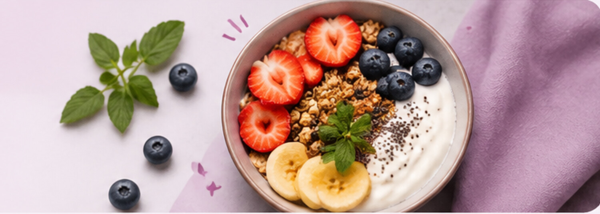

DISCOVER YOUR FOOD
Food Search
▦
FOOD KNOWLEDGEEvery bite
Every bite
has a story.
Search a food to explore its calories and nutritional values.

USDA FOOD DATA CENTRAL
Find food nutrition
Search generic foods and view nutrition values per 100g.
Select a food result to view its nutrition facts and calculate your portion.